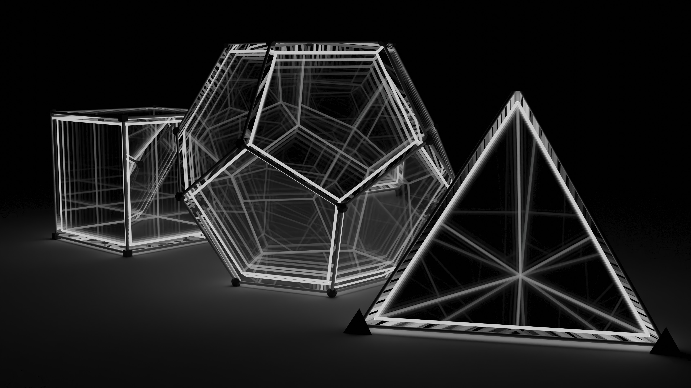
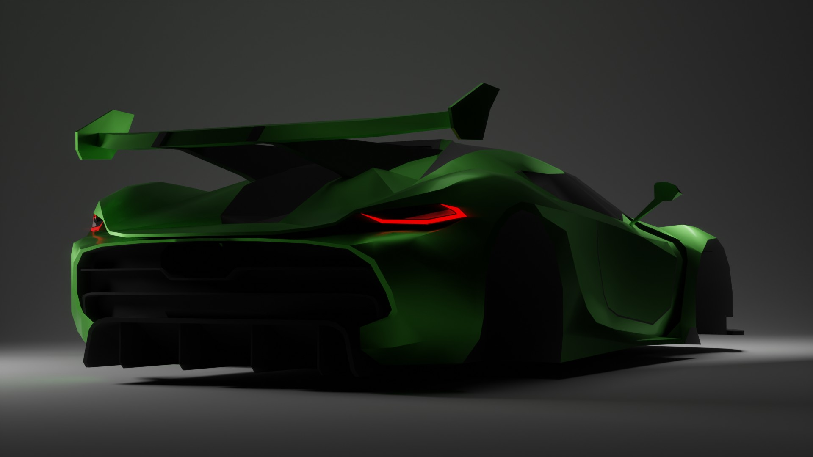
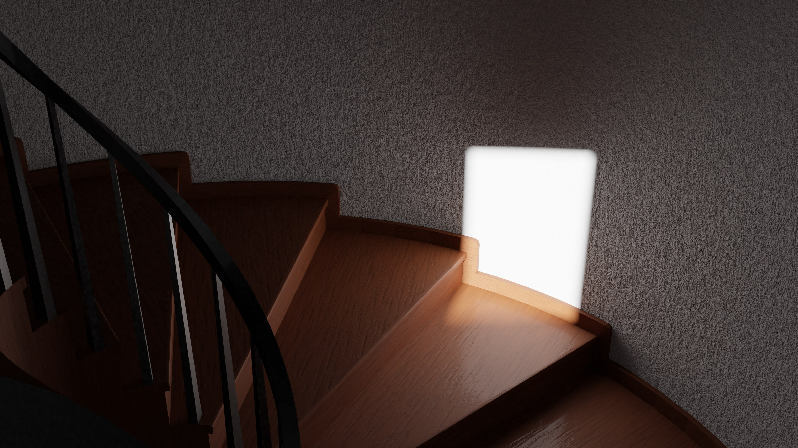
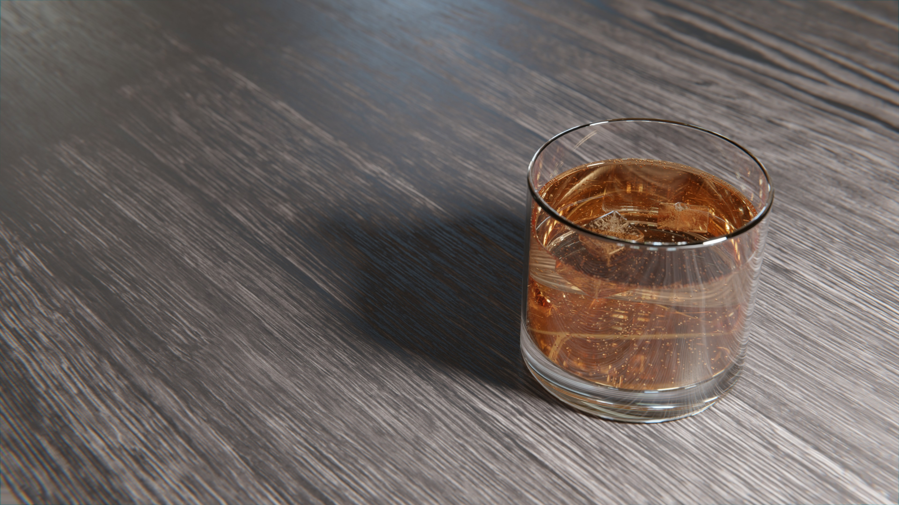
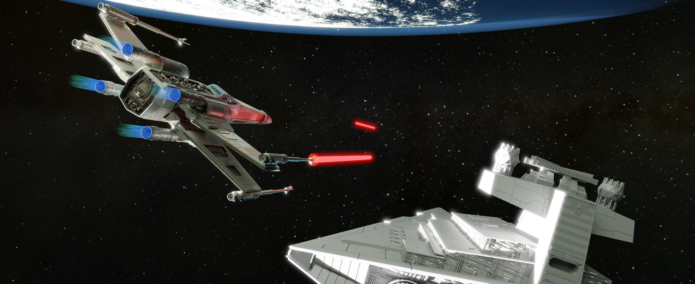
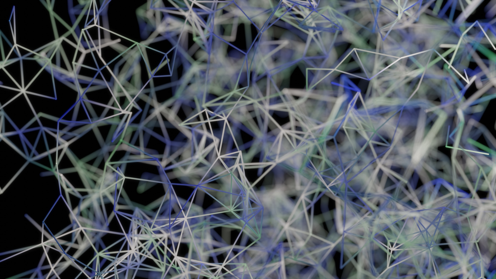

Infinity Mirrors
This is one effect I find particularly interesting because it is quite simple to build, even in real life, but the result is quite fascinating.
Koenigsegg Jesko
This is an image I rendered just for the creation of this website. I'd just finished modelling a new Koenigsegg Jesko, so I was inspired to make a new render.
CPU Brain
This is an experimental render, designed for a magazine cover assignment. The background displacement texture is created using JSplacement.

Stairway
This was my first real attempt at photorealism, inspired by a real scene I saw at my grandparents' house
Glass of Gingerale
I was inspired by a friend's work to challenge myself to render the same scene as photorealistically as I could at the time. Now, I see even more details I could improve on.
Star Battle
This is a frame from an animation I made for a school assignment two years ago. The models of the spaceships were found online for free.
Dispersion
An experiment with a custom light dispersion shader in Blender.

Plexus
An experiment with geometry nodes in Blender made just for this site.
Camaro
This is a render made for my prototype website. This is a very short 20 frame animation running at 60fps. As a result, the file is very small, and serves as the loading screen. If you look closely you'll see that every tree is identical, allowing for the seamless yet short loop.

"An idiot admires complexity, a genius admires simplicity."
- Terry Davis